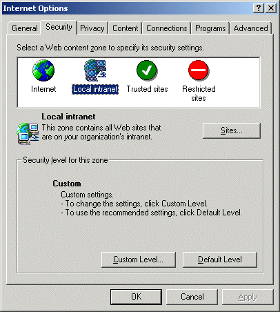

To set up OA as a local Intranet site:
- In Internet Explorer, select Internet Options from the Tools menu.
- Click the Security tab.
- Click Local Intranet.

- Click the Sites... button, then click the Advanced button.
- If the Require server verification (https:) for all sites in this zone box is ed, un it.
- In the Add this Web site to the zone: field, enter the URL of the COINSOA server.
- Click OK on each screen.
Alternatively, you could set the Web URL to be a Trusted Site. The default security level for an Intranet site is Medium; for a Trusted Site it is Low. Both will allow cookies.